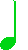
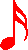
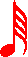
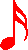
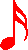
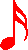
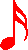

Ogni nota però oltre ad essere rappresentata da un nome può essere rappresentata anche da un numero, anzi per la precisione da due! Ad esempio la nota do potrà essere scritta anche come la coppia di numeri (261.63 , 1/4) dove 261.63 rappresenta la nota e 1/4 la sua durata nel tempo. Prova a scrivere di nuovo la canzone, atttento però!
Questa volta dovrai scrivere istruzioni del tipo "suona(261.63 , 1/4)"! Utilizza i tasti per aiutarti!
t =
Il simbolo che vedi all'inizio del pentagramma si chiama chiave di violino, o chiave di sol, questa indica che stiamo "suonando" delle note che appartengono alla quarta ottava. Come puoi vedere le note però non sono tutte uguali, non ti preoccupare però! La matematica verrà anche questa volta in nostro aiuto! I vari tipi di note, infatti, differiscono tra loro solo per il secondo numero ovvero la durata. La più grande ha durata 1 o come dicono i musicisti 4/4 (quattro quarti!) le altre sono solo delle frazioni di quel numero. Guarda la tabella per farti un idea!
Semibreve
Minima
Semiminima
Croma
Semicroma
Biscroma
Semibiscroma
Figura



Valore
Intero
metà del valore intero
1/4 del valore intero (oppure la metà della figura precedente)
1/8 del valore intero (oppure la metà della figura precedente)
1/16 del valore intero (oppure la metà della figura precedente)
1/32 del valore intero (oppure la metà della figura precedente)
1/64 del valore intero (oppure la metà della figura precedente)


 

 
